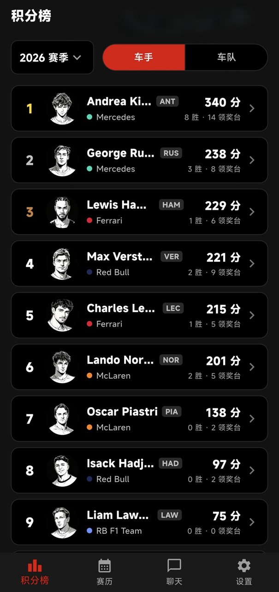
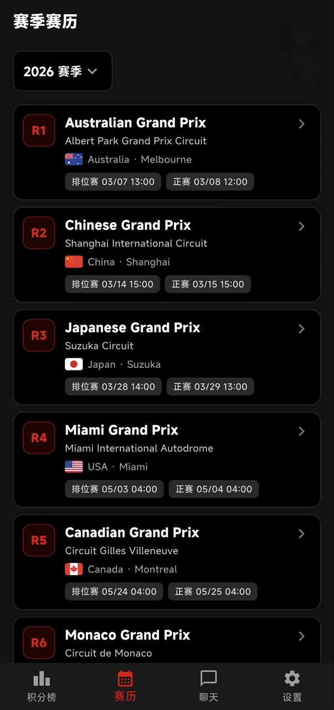
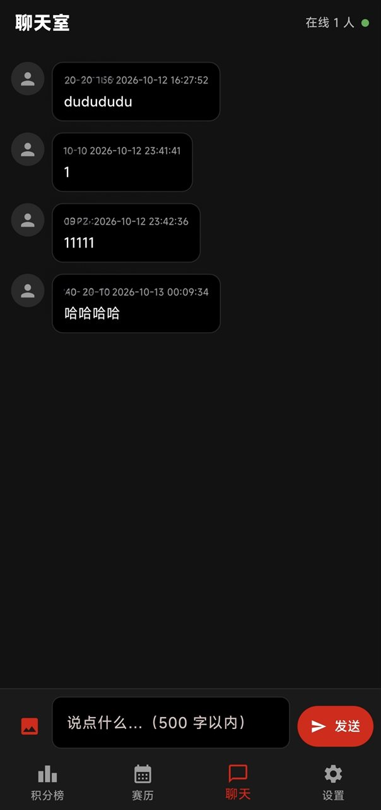

赛季积分榜
车手 / 车队积分榜，金银铜领奖台配色，逐场积分走势一目了然
手机扫码打开本页下载
分享给朋友？让他们扫码打开本页
车手 / 车队积分榜，金银铜领奖台配色，逐场积分走势一目了然
全年分站赛历、正赛倒计时与比赛周末时间表，按本地时区显示
排位赛 / 冲刺赛 / 正赛完整成绩，发车位与最快圈一站看全
生涯数据、赛季表现、领奖台与胜场统计，深度了解每一位车手
注册登录、自定义头像、个人资料与偏好设置
车迷实时聊天、发表情与图片，比赛周末一起看台


